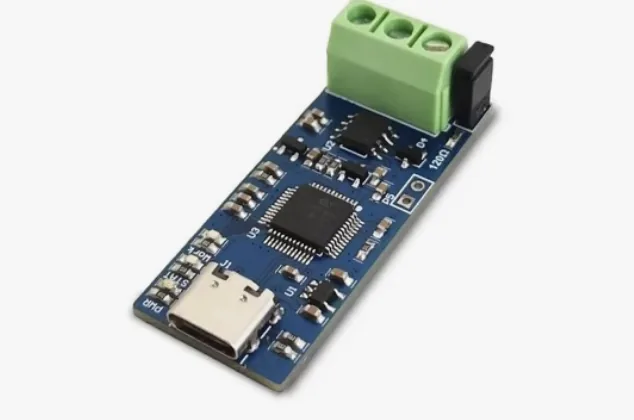
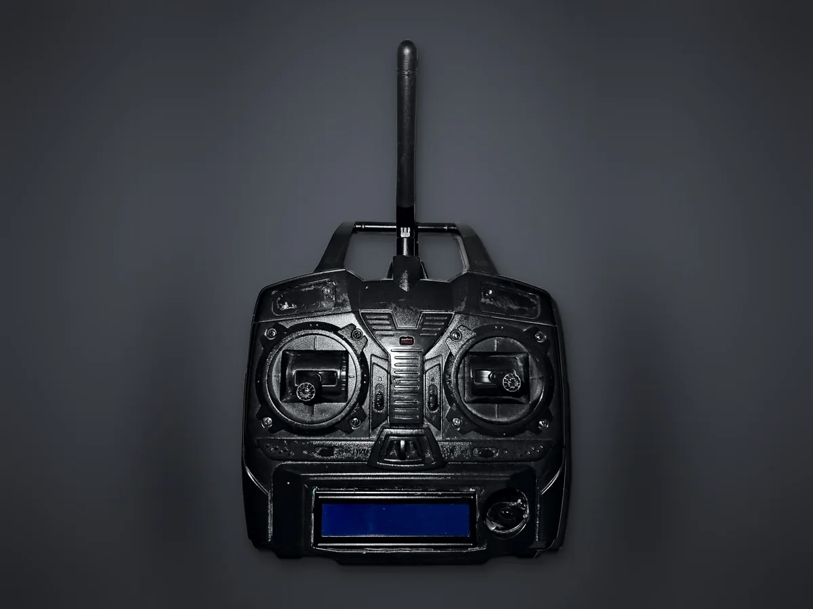
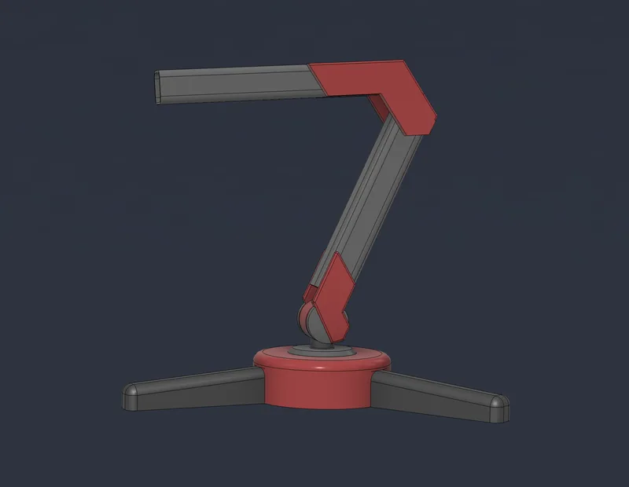
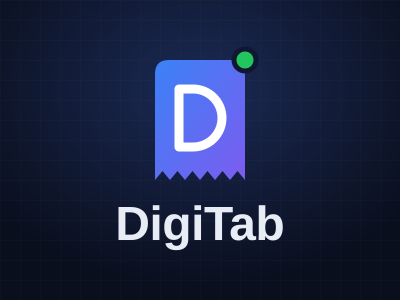

Elektrik-elektronik mühendisliği · 4. sınıf
Fatih Aksoy
Gömülü sistemler, PCB tasarımı ve otomasyon üzerine çalışıyorum. Kartı tasarlamaktan firmware'ini ve onu kullanan masaüstü arayüzü yazmaya kadar projenin tamamını üstlenmeyi seviyorum.

Hakkında
Merhaba, ben Fatih. Zonguldak Bülent Ecevit Üniversitesi'nde elektrik-elektronik mühendisliği son sınıf öğrencisiyim. Kendimi en çok gömülü sistemler, PCB tasarımı ve otomasyon alanlarında, gerçek donanım üzerinde çalışarak geliştiriyorum.
Son projelerimde bir quadcopter'ın uçuş kartını KiCad'de çizdim, STM32 ile bir robot kolu sürdüm, bir aracın CAN hattını dinleyerek motor devri sinyalini tersine mühendislikle çözdüm ve bunlarla konuşan masaüstü arayüzleri yazdım.
Endüstriyel otomasyon ve iş makinesi haberleşmesi üzerine iki staj yaptım.
| Odak | Gömülü yazılım, PCB tasarımı, haberleşme protokolleri, otomasyon |
|---|---|
| MCU | STM32, ESP32, AVR (ATmega328P) |
| Donanım | KiCad, Altium, Fusion 360, SolidWorks |
| Yazılım | C/C++ (PlatformIO, Arduino), Python (PyQt6, python-can), JavaScript (React, Electron, Node.js) |
| Protokoller | CAN, UART, I²C, SPI, USB-CDC, LoRa, ESP-NOW |
| Otomasyon | Siemens ve Delta PLC, TIA Portal, motor sürücüleri, elektrik panoları |
| Simülasyon | MATLAB, Simulink |
Eğitim ve staj
| 2027 (beklenen) | Lisans · Zonguldak Bülent Ecevit Üniversitesi Elektrik-Elektronik Mühendisliği |
|---|---|
| Haziran 2026 | Stajyer · Sistem Vinç A.Ş. Ağır iş makinelerindeki elektrik ve elektronik arızalara çözümler; CAN tabanlı sensör haberleşmesi, hidrolik ve pnömatik kontrol. |
| Haziran–Temmuz 2024 | Stajyer · Ensan, Otomasyon Bölümü Endüstriyel otomasyon makinelerinin bakım ve onarımında Siemens ve Delta PLC'ler, motor sürücüleri ve elektrik panoları; sıfırdan makine üretiminin elektrik-elektronik tarafı; görüntü tabanlı hata tespit sistemleri. |
Projeler
-
01
CAN-Bus Sniffer
Bir aracın OBD-II soketinden CAN trafiğini dinleyip, üreticiye özel motor devri sinyalini tersine mühendislikle bulan araç seti.

-
02
Yer Kontrol İstasyonu: LoRa Kontrolcü ve Alıcı
İHA'lar için masaüstü yer kontrol yazılımı: seri hattan gelen telemetriyi çözer, uçuş göstergelerini çizer ve harita üzerinden görev yükler.

-
03
Robot Kol Kontrolcüsü
STM32 Blackpill üzerinde çalışan 6 servolu robot kol firmware'i ve USB üzerinden kontrol eden PyQt6 masaüstü arayüzü.

-
04
ESP32 Quadcopter
Gövdesi de PCB olan, ESP32 tabanlı küçük bir quadcopter: şema, kart tasarımı ve PID stabilizasyonlu uçuş yazılımı.
-
05
STM32 Uçuş Kontrol Kartı
STM32 tabanlı, özel tasarım uçuş kontrol kartı ve stabilizasyon yazılımı.
-
06
3 Eksenli CNC Freze
Mekaniği, kontrol kartı ve yazılımıyla baştan tasarlanmış masaüstü CNC freze.
-
07
DigiTab Adisyon Sistemi
Restoran ve kafeler için gerçek zamanlı sipariş, masa ve menü yönetim sistemi.



İletişim
Staj, proje ya da sadece bir soru için bana e-postayla ulaşabilirsin. Projelerin kaynak kodları GitHub'da.
| E-posta | mf.aksoy34@gmail.com |
|---|---|
| GitHub | FatihAksoyEEE ↗ |
| mehmet-fatih-aksoy ↗ | |
| YouTube | @electronc_workshop ↗ |
| @fatih_aksoy6741 ↗ | |
| CV | PDF · Türkçe ve İngilizce |